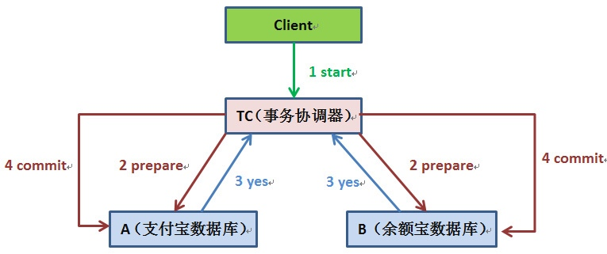
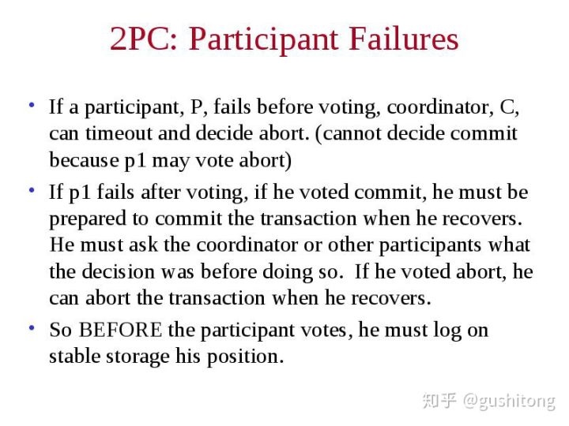
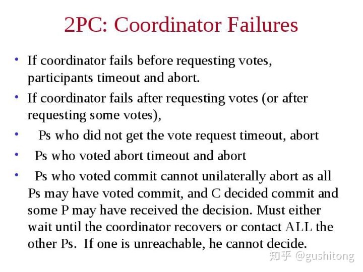
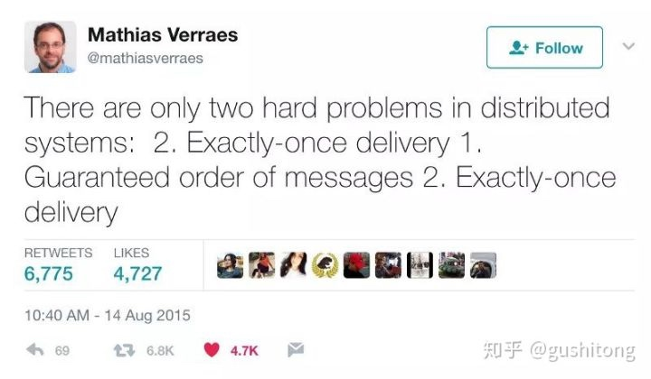

深入理解「分布式事务」
原文地址 https://zhuanlan.zhihu.com/p/51684618
关键词 go/python、架构存储、分布式基础
如果一个事务调用了不同服务器上的操作，那么它就成为了一个分布式事务。
考虑下面一种场景：当你发了工资之后，把你的当月工资 ¥1024 从支付宝转到了余额宝。
如果在支付宝账户扣除 ¥1024 之后，余额宝系统挂掉了，余额宝的账户并没有增加 ¥1024，这时候就出现了数据不一致的情况。
在很多系统中都能找到上述情况的影子：
- 在下单的时候，需要在订单表中插入一条数据，然后把库存减去一
- 在搜索的时候如果点击了广告，需要先记录该点击事件，然后通知商家系统扣除广告费
在一个分布式事务结束的时候，事务的原子特性要求所有参与该事务的服务器必须全部提交或全部放弃该事务。为了实现这一点，其中一个服务器承担了协调者 (coordinater) 的角色，由它来保证所有的服务器获得相同的结果。
协调者 (coordinater) 的工作方式取决于它选用的协议，“两阶段提交”是分布式事务最常用的协议。
1、two-phase commit protocol

两阶段提交协议 (two-phase commit protocol) 的设计出发点是允许任何一个参与者自行放弃它自己的那部分事务。由于事务原子性的要求，如果部分事务被放弃，那么整个分布式事务也必须被放弃。
在该协议的第一个阶段，每个参与者投票表决该事务是放弃还是提交，一旦参与者要求提交事务，那么就不允许放弃该事务。因此，在一个参与者要求提交事务之前，它必须保证最终能够执行分布式事务中自己的那部分，即使该参与者出现故障而被中途替换掉。
一个事务的参与者如果最终能提交事务，那么可以说参与者处于事务的准备好 (prepared) 状态。为了保证能够提交，每个参与者必须将事务中所有发生改变的对象以及自身的状态 (prepared) 保存到持久性存储中。
在该协议的第二个阶段，事务的每个参与者执行最终统一的决定。如果任何一个参与者投票放弃事务，那么最终的决定是放弃事务。如果所有的参与者都投票提交事务，那么最终的决定是提交事务。
问题在于，要保证每个参与者都投票，并且达成一个共同的决定。在无故障时，该协议相当简单。但是，协议必须在出现各种故障 (例如服务器崩溃，消息丢失或服务暂时无法通信）时能够正常工作。
2、两阶段提交的实现
为了实现两阶段提交协议，分布式事务中的协调者和参与者通常按照下面的接口进行通信：
- canCommit(trans) ?
协调者询问参与者是否可以提交事务，参与者回复自己的投票结果。
- doCommit(trans)
协调者告诉参与者提交它的那部分事务。
- doAbort(trans)
协调者告诉参与者放弃它的那部分事务。
- haveCommitted(trans, participant)
参与者用该操作向协调者确认它提交了事务。
- getDecision(trans) ?
当参与者在投 Yes 票后一段时间内未收到应答时，参与者用该操作向协调者询问事务的投票表决结果。该操作用于从服务器崩溃或从消息延迟中恢复。
阶段一（投票阶段）：
1）协调者向分布式事务的所有参与者发送canCommit？请求
2）当参与者收到canCommit请求后，它向协调者回复自己的投票（Yes/No）。
在投Yes票之前，它在持久性存储中保存所有对象，准备提交。如果投No票，参与者立即放弃。
阶段二（提交阶段）：
1）协调者收集所有的投票（包括它自己的投票）。
a）如果不存在故障并且所有的投票都是Yes时，那么协调者将决定提交事务并向所有参与者发送doCommit
请求
b）否则，协调者决定放弃该事务，并向所有投Yes票的参与者发送doAbort请求
2）投Yes票的等待者等待协调者发送的doCommit或者doAbort请求。一旦参与者接收到任何一种请求消息，
它将根据该请求放弃或者提交事务。如果请求是提交事务，那么他还要向协调者发送一个haveCommitted
来确认事务已经提交
3、分布式事务的故障模型
在分布式事务中执行的过程中，可能出现磁盘故障，进程崩溃以及消息的丢失，超时等。
两阶段提交是一种达成共识的协议，在该系统中，如果进程崩溃，那么是不可能达成共识的。但是，两阶段提交却是在这些条件下达成了共识，这是由于进程的崩溃被屏蔽，崩溃的进程被一个新的进程取代，新进程的状态根据持久性存储中保存的信息和其他进程拥有的信息来设定。
3.1、故障模型
Lampson 提出过一个分布式事务的故障模型，包括了硬盘故障、服务器故障以及通信故障。该故障模型声称：可以保证算法在出现故障时正确工作，但是对于不可预见的灾难性故障则不能正确处理。尽管会出现错误，但是可以在发生不正确行为之前发现并处理这些错误。Lampson 的故障模型包括以下故障：
- 对持久性存储的写操作可能发生故障（或因为写操作无效或因为写入错误的值）。例如，将数据写到错误的磁盘块被认为是灾难性故障。文件存储可能损坏。在持久性存储中读数据时可根据校验和来判断数据块是否损坏。
- 服务器可能偶尔崩溃。当一个崩溃的服务器由一个新进程取代后，它的可变内存被重置，崩溃之前的数据均丢失。此后新进程执行一个可恢复过程，根据持久存储中的信息以及从其他进程获得的信息设置对象的值，包括两阶段提交协议有关对象的值。当一个处理器出现故障时，服务器也会崩溃，这样它就不会发送错误的信息或将错误的值写入持久存储，即它不会产生随机故障。服务器崩溃可能出现在任何时候，特别是在恢复时也可能出现。
- 消息传递可能有任意长的延迟。消息可能丢失、重复或者损坏。接收方（通过校验和）能够检测到受损消息。未发现的受损消息和伪造的消息可能会导致灾难性故障。
利用这个关于持久性存储、处理器和通信的故障模型能够设计出一个可靠系统，该系统的组件可对付任何单一故障，并提供一个简单的故障模型。特别是，可靠存储 (stable storage) 可以在出现一个 write 操作故障或者进程崩溃的情况下提供原子写操作。它是通过将每一个数据块复制到两个磁盘上实现的。此时一个 write 操作用于两个磁盘块，在一个磁盘出现故障的前提下，另一个好的磁盘也可以提供正确数据。可靠处理器 (stable processor) 使用可靠存储，用于在崩溃之后恢复对象。可通过可靠的远程过程调用机制来屏蔽通信错误。
3.2、两阶段提交协议的超时
在两阶段协议的不同阶段，协调者或参与者都会遇到这种场景：不能处理它的那部分协议，直到接收到下一个请求或应答为止。
首先考虑这样的情形：某个投票者投 Yes 票并等待协调者发回最终决定，即告诉它是提交事务还是放弃事务。这样参与者的结果是不确定 (uncertain) 的，它在协调者处得到投票结果之前不能进行进一步处理。参与者不能单方面决定下一步做什么，同时该事务使用的对象也不能释放以用于其他事物。参与者向协调者发出 getDecision 请求来获取事务的结果，直到收到应答时，才能进入两阶段协议的第二阶段。
同理，如果协调者发生故障，那么参与者将不能获得协定，直到协调者被替代为止，这可能导致不确定状态的参与者长时间的延迟。
不依赖协调者获取最终决定的方法是通过参与者协作来获得决定。这种策略的优点是可以在协调者出故障时使用。（在本篇文章中我们不讨论这种方式）
4、两阶段提交的故障处理
当参与者发生故障的时候：
当协调者发生故障的时候：

5、两阶段提交的性能
假设一切运转正常，即协调者参与者不出现故障，通信也正常时，有 N 个参与者的两阶段提交协议需要 N 个 canCommit 消息和应答，然后再有 N 个 doCommit 消息。这样消息开销和 3N 成正比，时间开销是 3 次消息往返。由于协议在没有 haveCommitted 消息时仍可以正常运作（它们的作用只是通知服务器删除过时的协调者消息），因此在估计协议开销上，不将 haveCommitted 消息计算在内。
在最坏的情况下，两阶段提交协议在执行过程中可能出现任意多次服务器和通信故障。尽管协议不能指定协议完成的时间限制，但它能正确处理连续故障（服务崩溃或者消息丢失），并保证最终完成。
6、使用消息队列来避免分布式事务
5.1、消息队列
由于分布式事务存在严重的性能问题，在设计高并发服务的时候，往往通过其他途径来解决数据一致性问题。
举例来讲，你在北京很有名的姚记炒肝点了炒肝并付了钱后，他们并不会直接把你点的炒肝给你，而是给你一张小票，然后让你拿着小票到出货区排队去取。为什么他们要将付钱和取货两个动作分开呢？原因很多，其中一个很重要的原因是为了使他们接待能力增强（并发量更高）。
还是回到我们的问题，只要这张小票在，你最终是能拿到炒肝的。同理转账服务也是如此，当支付宝账户扣除 1 万后，我们只要生成一个凭证（消息）即可，这个凭证（消息）上写着 “让余额宝账户增加 1 万”，只要这个凭证（消息）能可靠保存，我们最终是可以拿着这个凭证（消息）让余额宝账户增加 1 万的，即我们能依靠这个凭证（消息）完成最终一致性。
这样我们上述的转账就变成了如下过程：
- 支付宝在扣款事务提交之前，向消息队列发送消息。此时的消息队列只记录消息，而并没有将消息发往余额宝。
- 当支付宝扣款事务提交成功，向消息队列发送确认。在得到确认的指令后，消息队列向该消息发往余额宝。
- 当支付宝扣款事务提交失败，向消息队列发送取消。在得到取消的指令后，消息队列取消该消息，该消息将不会被发送。
- 对于那么未确认的消息，需要消息队列去支付宝系统查询这个消息的状态，并进行更新。（因为支付宝可能在扣款事务提交成功后挂掉，此时消息的状态未被更新为：“确认发送 “。从而导致消息不能被发送。
5.2、重复投递
还有一个严重的问题是消息重复投递，以我们支付宝转账到余额宝为例，如果相同的消息被重复投递两次，那么我们余额宝账户将会增加 2 万而不是 1 万了。

我们将在后续的文章讨论消息队列的两个问题：
- Exactly-once delivery
- Guaranteed order of messages
Copyright © 2015 Powered by MWeb, Theme used GitHub CSS.